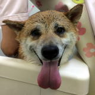
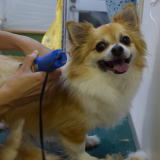
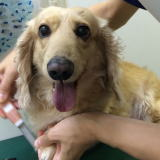
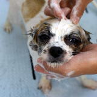
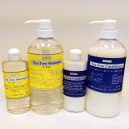
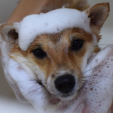

トリミングGrooming
獣医師とトリマーの連携で美容と健康・病気の予防と治療を総合的にサポート！
当院では、ワンちゃんたちが健やかで快適に暮らせるようトリミングを行っております。
トリミング前に獣医師による健康チェック（問診・聴診・触診）を行いますので、耳や皮膚その他のトラブルを見つけた際のケアも万全です。
健康なワンちゃんはもちろん 持病のあるワンちゃんも安心してご利用できるトリミングを行っております。
病気予防や健康維持のために、定期的にトリミングをご利用ください。
カットスタイルについては、トリマーにご相談ください。スタイルブックもございます。


トリミングのご利用について
院内感染を予防するために、1年以内に混合ワクチンと狂犬病予防接種をしている当院にカルテのあるワンちゃんを対象とさせていただいております。また、ワンちゃんの性格などによってはトリミングできないこともありますのでご了承ください。
月曜日〜土曜日の
完全予約制です。
ご予約は 0985-67-4312
当院のこだわり
当院のトリミングは、エッセンシャルオイルTee Tree配合の100％無添加ティートリーシャンプーで ２度丁寧にシャンプーし、ティートリーコンディショナーで仕上げます。
アトピー体質や敏感肌のワンちゃんにもおすすめです。
 

トリミングの流れについて
-
獣医師による診察
心音を聴いたり 脈を診たり、耳や皮膚など全身をチェック！。 -
耳のお手入れ・つめきり・肛門のうしぼり他
目を保護するため、眼軟膏をつけたり 足裏のお手入れなどもします -
ブラッシング
抜け毛（アンダーコート）・もつれや毛玉を取り除きます。 -
シャンプー
天然成分のみのTee Treeシャンプーで丁寧に2度シャンプーした後、Tee Treeコンディショナーで仕上げます。 -
ドライヤー
ブラッシングをしながら丁寧に完全に乾くまで専用ドライヤーで乾かします -
カット
はさみやバリカンを使ってご要望の長さやスタイルにカット！ -
獣医師による最終チェック
目の洗浄したり、耳、肛門まわりに医療用のオイルと軟膏をつけて、全体を最終チェック！
動物取扱業者標識
有限会社コウロギ 代表取締役 興梠 祐世
コウロギ動物病院
宮崎市清武町さひ1丁目59番地
保 管
宮保衛指令第122号232
平成29年5月25日 登録
平成34年5月24日 有効期間の末日
動物取扱責任者 興梠 祐世